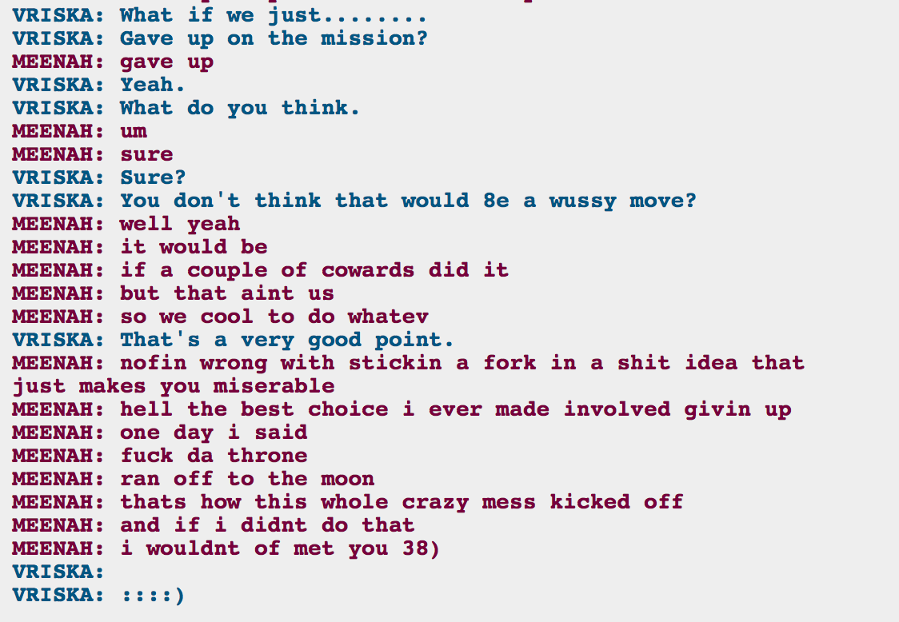

*bawls eyes out* That is just so sweet!
At least they got the treasure/juju/weapon. So they can just hang onto it until whoever arrives and can do something with it. Elsewise I would think it’s a little silly to quit like that, when LE is eventually going to end up killing them too. But Vriska is growing up and realizing she doesn’t have to be the one to do the thing, and that’s great.